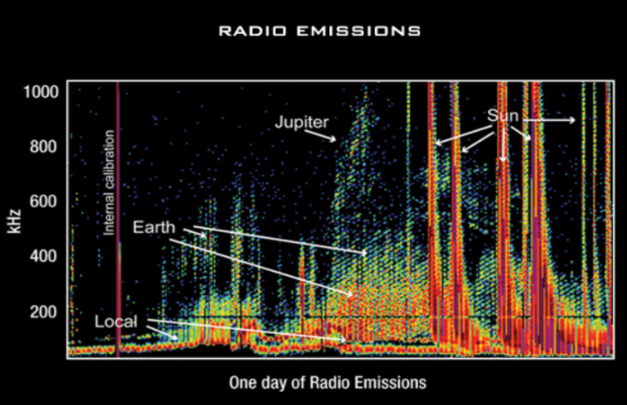

The first step to data integrity (or how we are going to transfer data) is being aware of environmental issues BEFORE transferring files. In outer space, the transfer of data can become corrupted by astronomical objects that have a changing magnetic field, such as the planets and our Sun.
Data pictured below show emissions from a variety of sources including radio bursts from the Sun, the Earth, and even from Jupiter's ionosphere whose wavelengths measure about fifteen meters in length. The far right of this graph shows radio bursts from the Sun caused by electrons that have been ejected into space during solar flares moving at 20% of the speed of light.
Transferring data is oftentimes ill-advised in the presence of extreme radio waves such as these, and resulting files are often riddled with “noise,” or data that’s corrupted, distorted, or otherwise meaningless.
A cosmic-ray observatory is a scientific installation built to detect high-energy-particles coming from space called cosmic rays. This typically includes photons (high-energy light), electrons, protons, and some heavier nuclei, as well as antimatter particles. About 90% of cosmic rays are protons, 9% are alpha particles, and the remaining ~1% are other particles. For our purposes, it will be able to detect the disrupting radio waves. When we detect a spike in the waves, it is unsafe to transfer data (we will not), and vice versa (no waves = safe transfer).
Quantum Key Distribution (QKD) uses principles of quantum mechanics to enable two parties to establish a shared secret key for secure communication, which can then be used to verify file integrity through transfers. The key aspects of QKD are typically based on the principles of quantum superposition and quantum entanglement.
Quantum Superposition: In quantum mechanics, particles such as photons can exist in multiple states simultaneously, a phenomenon known as superposition. QKD often uses a quantum property called polarization. Photons can be polarized in different directions, representing the 0s and 1s of a binary code.
Quantum Entanglement: Entanglement is a quantum phenomenon where two or more particles become correlated in such a way that the state of one particle is directly related to the state of another, regardless of the distance between them. QKD systems leverage entangled particles to create a shared secret key.
The process for using these quantum principles to verify file integrity through transfers is as such:
QKD typically involves the exchange of quantum particles (usually photons) between the two communicating parties, often referred to as Alice and Bob. Alice sends a stream of entangled photons to Bob. Each photon represents a bit in the key. Due to the principles of quantum mechanics, any attempt to eavesdrop on the communication (by intercepting and measuring the photons) would disturb their quantum states, and this disturbance can be detected.
After receiving the entangled photons, Bob measures their polarization states using a chosen basis. Alice and Bob publicly announce the basis they used for each bit without revealing the actual measurement results.
Alice and Bob compare a subset of their bits where the measurement basis matches. Any discrepancy between their measurements indicates potential eavesdropping or errors in the key generation process.
Pairing with a future key based post-quantum encryption scheme should create a resilient network for years to come. Note QKD is in its infancy, but research right now is pushing the bounds of what is possible.
Ensuring data integrity during the transmission of files in space is paramount due to the harsh and unpredictable conditions of the space environment. Space missions rely heavily on the transmission of data between spacecraft, ground stations, and other devices. Any corruption or loss of data during transmission can have serious consequences, jeopardizing the success of the mission or compromising critical information. To mitigate these risks, advanced error detection and correction techniques are employed. These techniques include checksums, redundancy, and error-correcting codes, which allow for the detection and, in some cases, correction of errors that may occur during data transmission. Additionally, protocols such as the Consultative Committee for Space Data Systems (CCSDS) provide standards and guidelines specifically tailored for space data communications, ensuring interoperability and reliability across different space missions and agencies.
Moreover, space agencies employ sophisticated communication systems and protocols designed to cope with the challenges of space communication, such as signal degradation, cosmic radiation, and long distances. For instance, deep space missions often utilize powerful antennas and modulation techniques to maintain communication over vast distances. Furthermore, protocols like the Delay-Tolerant Networking (DTN) protocol are specifically designed for space communications, allowing for efficient data transmission even in scenarios where traditional networking protocols fail, such as when there are long delays or disruptions in connectivity. Overall, ensuring data integrity in transferring files in space requires a combination of robust error detection and correction techniques, s pecialized communication protocols, and advanced hardware and software systems tailored to the unique challenges of the space environment.
The threat of hackers sabotaging space satellites and potential moon bases is a concerning possibility as humanity ventures further into space exploration. Space infrastructure, including satellites and future moon bases, are critical for telecommunications, navigation, Earth observation, and potentially sustaining human life beyond Earth. A successful cyberattack on these assets could have catastrophic consequences, disrupting communication networks, compromising data integrity, and even endangering lives. Hackers could potentially exploit vulnerabilities in the software, communication protocols, or control systems of these space assets to gain unauthorized access, manipulate operations, or cause physical damage. Such attacks could be motivated by various factors, including espionage, terrorism, or geopolitical tensions, highlighting the importance of robust cybersecurity measures in space systems.
Furthermore, the emergence of quantum computers poses a new and unprecedented challenge to space cybersecurity. Quantum computers have the potential to break many of the cryptographic algorithms currently used to secure data transmission and communication networks, rendering traditional encryption methods obsolete. This could significantly amplify the threat posed by hackers, allowing them to decrypt sensitive information, intercept communication channels, and compromise the integrity of space missions with greater ease. As quantum computing technology advances, space agencies and satellite operators must proactively develop quantum-resistant encryption algorithms and protocols to safeguard space assets against this emerging threat.
These are just the most apparent threats faced by a space program. There is always human error that will leave you unprotected. This may include laps in security practices that come with comfort and patterns.
| Data Level | Description |
|---|---|
| Level 0 |
Reconstructed, unprocessed instrument and payload data at full resolution, with any and all communications artifacts (e.g., synchronization frames, communications headers, duplicate data) removed. (In most cases, NASA's EOS Data and Operations System [EDOS] provides these data to the DAACs as production data sets for processing by the Science Data Processing Segment [SDPS] or by one of the SIPS to produce higher-level products.) Completely unprocessed instrument, no security with only payload data. |
| Level 1 |
Level 1 data are reconstructed, unprocessed instrument data at full resolution, time-referenced, and annotated with ancillary information, including radiometric and geometric calibration coefficients and georeferencing parameters (e.g., platform ephemeris) computed and appended but not applied to L0 data. L1 data includes new variables to describe the spectra. These variables allow the user to identify which L1 channels have been copied directly from other L1 channels and which have been synthesized from them and why. Basically the raw data with no filters, available for encryption/decryption, is vulnerable. |
| Level 2 |
L2 data contains information derived from the geolocated sensor data, such as ground elevation, highest and lowest surface return elevations, energy quantile heights (“relative height” metrics), and other waveform-derived metrics describing the intercepted surface. The permission layer where information about the raw data is processed, and communicated within the level. |
| Level 3 |
Variables mapped on uniform space-time grid scales, usually with some completeness and consistency. L3 data are generally periodic summaries (weekly, ten-day, monthly) of L2 products. Encrypted data, sends key. |
| Level 4 |
Model output or results from analyses of lower-level data (e.g., variables derived from multiple measurements). Decrypted data, receives key. |
The levels of permissions of each device in the top right corner should be (subject to change/discussion):
Radar Dish - Level 0, 1, and 2
Individual Computers - Level 0 and 1
Base Switch - Level 0, 1, and 2
Base Router - Level 3 and 4
Radio Tower - Level 3 and 4
Base Server - Level 3 and 4